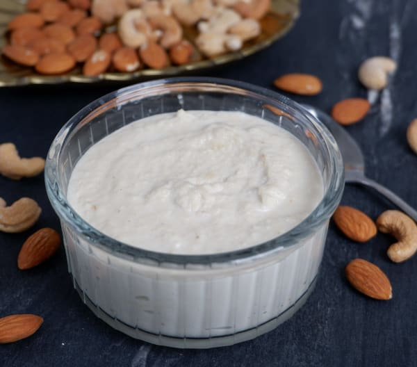

Almond cashew paste

Description
Cashew almond paste is used extensively in Indian cooking to help thicken gravies and give a rich texture to any curry. It adds a creamy texture and tasty twist to a variety of dishes.
Ingredients
Steps
- Place the cashews in a bowl and cover with water for 30-45 minutes
- Drain the cashews but keep some of the water to add back to the paste if required after blending
- Put the drained cashews into a dish suitable for blending and add just enough water to cover them by about 1 cm.
- Blend the cashews for about 20 seconds to create a paste adding back some of the drained liquid 1 tablespoon at a time (or water if you've thrown it) until you get a paste the consistency of yoghurt
- Store in the fridge for 3-5 days or freeze in 2 tbsp portions for use at a later date